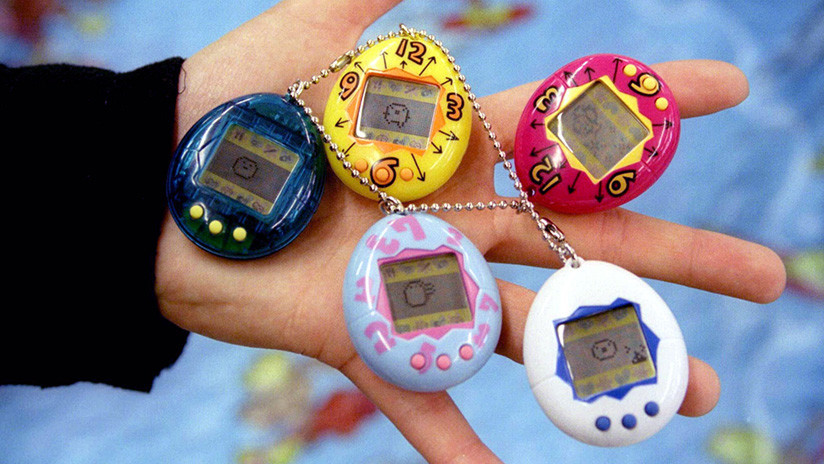

Apenas unas semanas después de la caída del Muro de Berlín, daba comienzo la década de los 90, una época recordada con cariño pero que suele pasar desapercibida en comparación con otros momentos históricos más emblemáticos. Acontecimientos como la Guerra del Golfo, la clonación de la oveja Dolly, el desarrollo de la World Wide Web o los Juegos Olímpicos de Barcelona 92 marcaron aquellos días, al igual que la videoconsola Game Boy o series como ‘Los Simpsons’ o ‘Vigilantes de la Playa’.
Cuando pensábamos que la máxima innovación eran nuestros tenis que prendían una luz rojita en cada pisada, llegó el Tamagotchi, la primera mascota virtual, para demostrarnos que los sueños se hacen realidad. Quizá nunca lograste que viviera más de dos días, ¡pero seguro te dio grandes momentos de diversión!
Una de las mejores cosas de los 90 es que no había una norma marcada a la hora de vestir. A diferencias de otras décadas con un estilo mucho más definido y hegemónico, aquí valía casi todo. Además de encontrar la tribu urbana con la que más te identificaras, ya fueran raperos, bakalas, otakus o emos, tenías que definirte un estilo propio muy llamativo.
Desde pantalones extra largos con los que barrías todo, camisetas ‘ombligueras’, gorras hacia atrás al más puro estilo Will Smith, ropa de camuflaje y pines, muchos pines. Eso sí, fueras del estilo que fueras, lo importante era llevar la cintura del pantalón lo bastante baja como para que se viera tu ropa interior.
Pero, sin duda, lo que más marcó la moda noventera fue la democratización de los tatuajes y los piercings. Todo adolescente que quisiera demostrar su rebeldía debía tatuarse tribales gigantes, letras chinas, flores o perforarse la cara sin miramiento alguno.